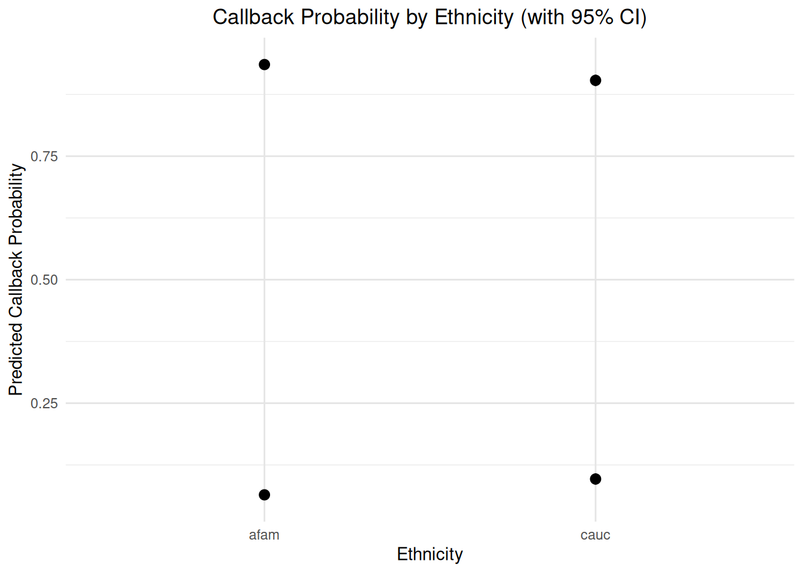

# A tibble: 2 × 7
term estimate std.error statistic p.value conf.low conf.high
<chr> <dbl> <dbl> <dbl> <dbl> <dbl> <dbl>
1 (Intercept) -2.23 0.0726 -30.7 2.22e-207 -2.38 -2.09
2 citychicago -0.397 0.106 -3.76 1.70e- 4 -0.605 -0.190Resumes: Courage and Temperance
The Question
Bertrand and Mullainathan (2004) sent 4,870 fictitious resumes to help-wanted ads in Boston and Chicago newspapers, randomly assigning each resume an African-American-sounding or White-sounding name. Our data records, for each resume, whether it received a callback, along with the name’s connotation and the resume’s characteristics.
Imagine that you work for a civil rights organization in Chicago. You want to understand the process by which black US citizens are discriminated against in hiring today.
The civil rights organization asks: What is the average causal effect of having a black-sounding name, rather than a white-sounding name, on the probability that a job applicant in Chicago today receives a callback?
The setup chunk of this document loads the packages and the data. Today covers both Courage and Temperance, so the modeling and the answering happen in one meeting.
Courage
Candidate Models
Estimate a model in which call is the outcome and city is the only covariate.
Display the coefficients and their confidence intervals.
Interpret the estimate for citychicago.
Estimate a model in which call is the outcome and city and ethnicity are the covariates.
# A tibble: 3 × 7
term estimate std.error statistic p.value conf.low conf.high
<chr> <dbl> <dbl> <dbl> <dbl> <dbl> <dbl>
1 (Intercept) -2.47 0.0964 -25.6 5.88e-145 -2.66 -2.29
2 citychicago -0.399 0.106 -3.77 1.66e- 4 -0.607 -0.191
3 ethnicitycauc 0.439 0.107 4.09 4.33e- 5 0.230 0.652Display the coefficients and their confidence intervals.
Interpret the estimate for ethnicitycauc.
Add quality, and its interaction with ethnicity, to the previous model.
Display the coefficients and their confidence intervals.
Interpret the estimate for the interaction ethnicitycauc:qualitylow.
The Data Generating Mechanism
Which model should we choose, and why? Define fit_resumes as your chosen model.
# A tibble: 4 × 7
term estimate std.error statistic p.value conf.low conf.high
<chr> <dbl> <dbl> <dbl> <dbl> <dbl> <dbl>
1 (Intercept) -2.78 0.134 -20.8 6.18e-96 -3.05 -2.52
2 citychicago -0.329 0.108 -3.04 2.33e- 3 -0.542 -0.117
3 ethnicitycauc 0.440 0.108 4.09 4.39e- 5 0.230 0.652
4 experience 0.0332 0.00940 3.53 4.11e- 4 0.0145 0.0513Temperance
Predictions
Use predictions(fit_resumes, type = "prob") to estimate the callback probability for individual resumes in the sample.
# A tibble: 4,870 × 21
rowid group estimate std.error statistic p.value s.value conf.low conf.high
<int> <fct> <dbl> <dbl> <dbl> <dbl> <dbl> <dbl> <dbl>
1 1 yes 0.0779 0.00643 12.1 1.03e-33 110. 0.0652 0.0905
2 2 yes 0.0779 0.00643 12.1 1.03e-33 110. 0.0652 0.0905
3 3 yes 0.0516 0.00495 10.4 1.92e-25 82.1 0.0419 0.0613
4 4 yes 0.0516 0.00495 10.4 1.92e-25 82.1 0.0419 0.0613
5 5 yes 0.126 0.0178 7.05 1.79e-12 39.0 0.0907 0.160
6 6 yes 0.0779 0.00643 12.1 1.03e-33 110. 0.0652 0.0905
7 7 yes 0.0755 0.00639 11.8 3.44e-32 105. 0.0630 0.0880
8 8 yes 0.0821 0.0121 6.77 1.32e-11 36.1 0.0583 0.106
9 9 yes 0.0469 0.00487 9.63 5.72e-22 70.6 0.0374 0.0565
10 10 yes 0.0516 0.00495 10.4 1.92e-25 82.1 0.0419 0.0613
# ℹ 4,860 more rows
# ℹ 12 more variables: name <chr>, sex <chr>, ethnicity <chr>, quality <chr>,
# call <fct>, city <chr>, jobs <dbl>, experience <dbl>, honors <chr>,
# holes <chr>, special <chr>, df <dbl>Visualizations
Create a visualization of the average predictions by ethnicity using plot_predictions().

What measure of uncertainty is shown in this plot?